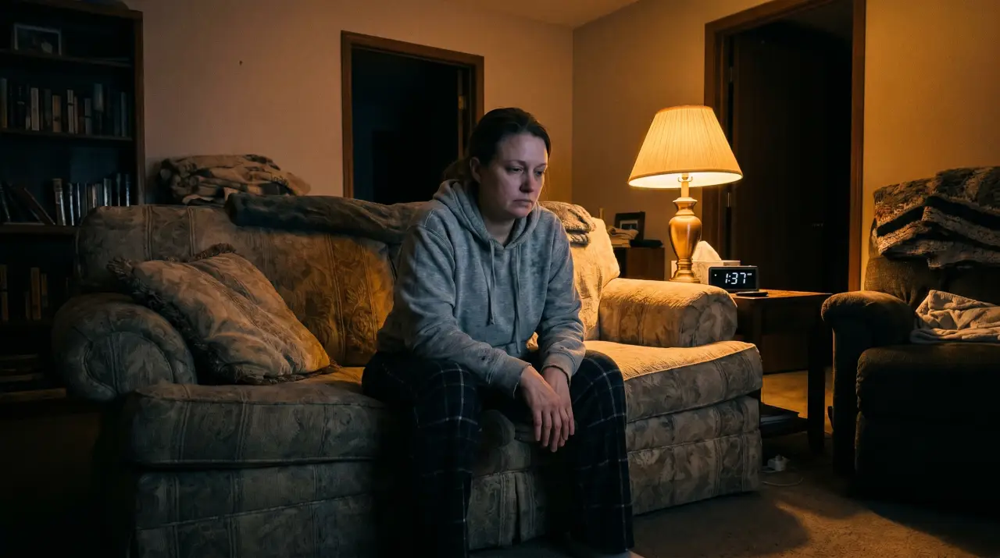
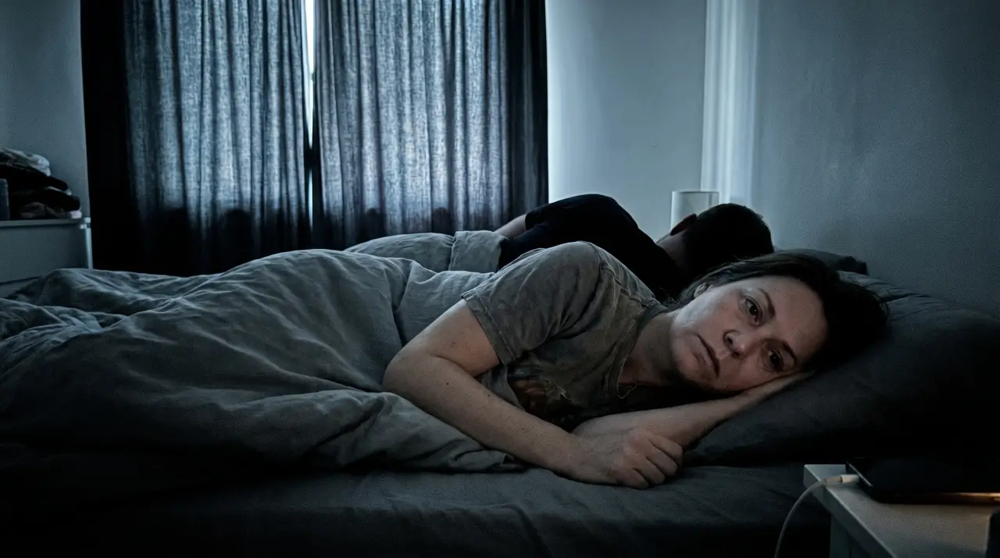
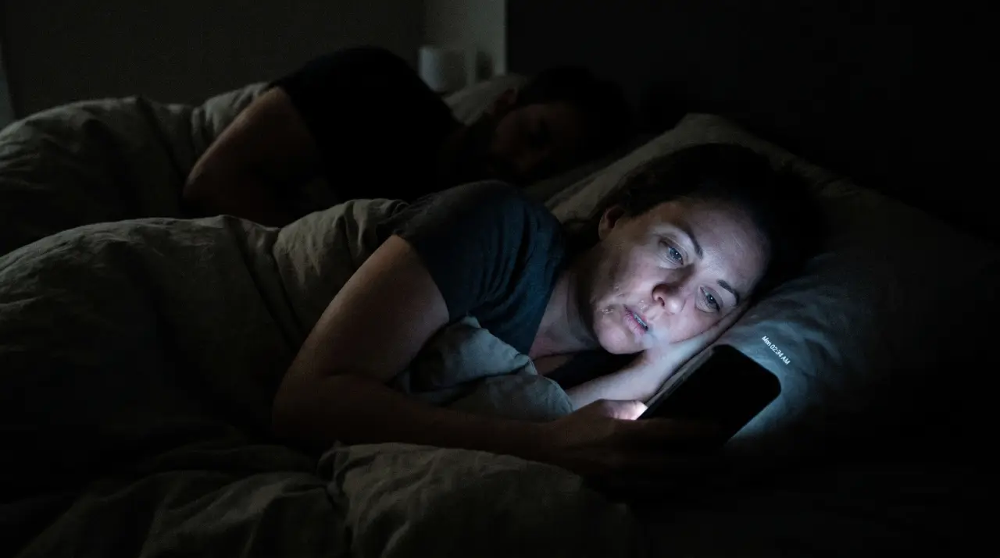

I'm going to say something that took me a long time to admit even to myself.
I started to resent my husband. And I say "started to" because I found something that completely fixed his snoring, and the solution was so simple it still makes me angry I didn't find it years earlier.
But before I get to that — let me tell you how bad it actually got.
Not in a dramatic way. Not in a way anyone around us would have noticed. Just this quiet creeping feeling that would show up every night around 11pm when we turned the lights off and I lay there waiting for it to start.
He would be asleep within minutes. I mean that literally — the man could fall asleep mid-sentence. And within minutes of that the snoring would begin, and I would lie there next to him feeling something I didn't want to feel toward someone I genuinely love.
It wasn't his fault. I knew it wasn't his fault. That didn't make the feeling go away.
What Three Years Of Broken Sleep Does To A Marriage.
Nobody talks about this part.
Everyone talks about snoring like it's a minor inconvenience. A punchline. Something couples joke about at dinner parties. What they don't talk about is what happens to a relationship when one person is sleeping perfectly every single night and the other one hasn't slept properly in years.
He would wake up refreshed. Make coffee. Be in a good mood before 8am. Ask how I slept with genuine curiosity, like the answer might be anything other than what it always was.
And I would smile and say fine because what else do you say to someone who has no idea what they're doing to you, especially when it isn't even their fault.
But underneath that I was running a quiet deficit that kept growing. Patience I didn't have. Warmth I couldn't access. That particular tenderness you feel toward someone you love that gets harder to reach when you're exhausted and they're the reason and they don't even know it.
I wasn't just tired. I was becoming someone I didn't want to be around the person I loved most.

The Thoughts I'm Ashamed To Have Had.
I need to say this because I think a lot of women have had these thoughts and nobody ever says them out loud.
I fantasized about sleeping in the guest room. I thought about it seriously, mapped it out in my head, how I'd bring it up, how he'd react. I didn't do it because I knew what it would mean. Not just for the logistics of sleeping but for us, for the invisible thing between two people that requires proximity and warmth and lying next to each other in the dark.
I started going to bed before him just to get a head start on sleep before the noise arrived.
I would lie there some nights watching him sleep, completely peaceful, completely unaware, and feel something I can only describe as a quiet unfairness. He got to sleep. He got to rest. He got to wake up whole. And I lay there next to him night after night and got none of that.
I didn't want to feel that way. Feeling that way made me feel guilty on top of everything else. Guilty for resenting something he couldn't control. Guilty for the distance it was quietly creating.
The snoring wasn't just stealing my sleep. It was slowly stealing the version of me that showed up for this marriage.
"I would smile and say fine because what else do you say to someone who has no idea what they're doing to you, especially when it isn't even their fault."
The Conversation I'd Been Avoiding.
I'd tried to bring it up before. Twice, maybe three times over the years, carefully, trying not to make him feel bad about something he couldn't help.
The response was always some version of the same thing. He'd feel terrible for a week, maybe download one of those snoring apps that monitored his sleep, mention looking into something, and then life would get busy and it would quietly drop off the agenda and nothing would change.
I stopped bringing it up because the cycle of raising it and nothing changing felt worse than just managing it alone. At least alone I wasn't also dealing with his guilt on top of my exhaustion.
So I started dealing with it myself. Quietly. Without making it a whole thing.

What I Found When I Started Looking Properly.
I didn't want a dramatic solution. I didn't want a machine or a device or a conversation with a specialist or a process that required him to accept there was a problem and commit to fixing it. I knew that path and I knew where it led.
I needed something simple. Something I could quietly introduce without it becoming a negotiation. Something that would just work.
I came across SnoreStop while I was reading about snoring causes late one night, still awake of course, phone in hand in the dark while he slept beside me completely unaware. A natural throat spray that had been sitting in American pharmacies since 1995. Not a gadget, not a device, not something requiring a prescription or a doctor or a fight.
The science behind it was straightforward once I read it. Snoring is a throat problem, not a nose problem. While you sleep the soft tissue at the back of the throat relaxes and collapses slightly, and air passing through that narrowed space makes the tissue vibrate, and that vibration is the sound. All of it. SnoreStop coats that tissue with a fine natural spray that reduces the vibration at the source, without a mask, without a device, without anything except two seconds before bed.
It had been trusted by over 250,000 people and it had been in pharmacies for thirty years. I found it on a Tuesday night. I ordered it immediately.

How I Introduced It Without Making It A Big Deal.
I put it on his nightstand without explaining much. He picked it up the next morning, turned it over, read the back.
"What's this?"
"Something I want you to try before bed. Takes two seconds."
He looked at me for a moment. "For snoring?"
"Yes."
He nodded and put it back on the nightstand. No fight. No defensiveness. No week-long guilt spiral. Just a man who had been waiting for an easy enough solution that he could actually say yes to without it feeling like an admission of something.
That night he picked it up before turning the light off, used it, and went to sleep.
I lay there in the dark that first night and waited. The snoring started but it was different. Quieter. Noticeably, measurably different in a way I could hear clearly. Not gone but changed enough that something in me unclenched slightly.
By the third night I fell asleep before him for the first time in years. Not because I was trying to get ahead of the noise. Because I was actually tired and actually comfortable and the noise wasn't coming the way it used to.
By the end of the first week I woke up one morning and realized I hadn't felt that feeling the night before. That quiet resentment that lived in the space between us in the dark. It just hadn't been there.
I hadn't realized how much of our nights it had been taking up until it was gone.

What I Wish I'd Known Sooner — The Price.
I spent a long time assuming the solution to this would be expensive, complicated, or both. Here is what actually fixing snoring costs in this country:
And it has been in pharmacies since before we were married. The solution to something that was quietly damaging our relationship cost under $50 and had been available around the corner the entire time. That's the part that still gets me.
Six Months Later.
He still uses it every night. It's part of the routine now, as unremarkable as brushing his teeth, and he doesn't think about it any more than he thinks about that.
The guest room conversation never happened. I never brought it up because I never needed to.
I go to bed at the same time as him now. I lie next to him in the dark and I feel what I'm supposed to feel, what I always used to feel before the exhaustion got in the way of it. Just warmth. Just ease. Just two people who have been together a long time lying next to each other at the end of the day.
I didn't realize how much of that I had quietly lost until I felt it come back.
I got that version of myself back. It cost under $50 and took two seconds before bed.
The Part That Removed The Last Barrier.
Even at under $50, even knowing everything I knew about it, I hesitated. Not because of the money. Because I was tired of the specific disappointment of something not working.
What moved me was the guarantee.
SnoreStop comes with a full 30-day money back guarantee and that changed the calculation completely. Because it meant there were only two possible outcomes.
Either this works and I get my sleep back and I get myself back and the quiet distance that had been building in our marriage stops building. Or it doesn't work and I get every single dollar back without a conversation or a process or any of the runaround you'd expect.
Either It Works, Or It's Completely Free.
Thirty days. If it doesn't do what it says, every dollar back, no conversation, no justifying yourself, no runaround from a company that wasn't confident in what it was selling.
There is no version of trying this where you lose. The guarantee makes that mathematically impossible.
Why I'm Writing This.
Because I know how many women are lying awake right now next to someone they love, feeling something they don't want to feel, saying fine every morning when they are very much not fine.
It doesn't have to keep going like that.
The thing that was quietly doing damage to our relationship had a solution that cost under $50 and had been in pharmacies since 1995 and took two seconds before bed. I wish I'd found it years earlier. I wish someone had told me it existed.
I'm telling you now.
Try it tonight. Because whatever the snoring is doing to your sleep, it's probably doing something to your marriage too. And both of those things deserve to be fixed.
Full 30-day money back guarantee — either it works or it's free
Ships in 2 days · No prescription needed · Natural ingredients